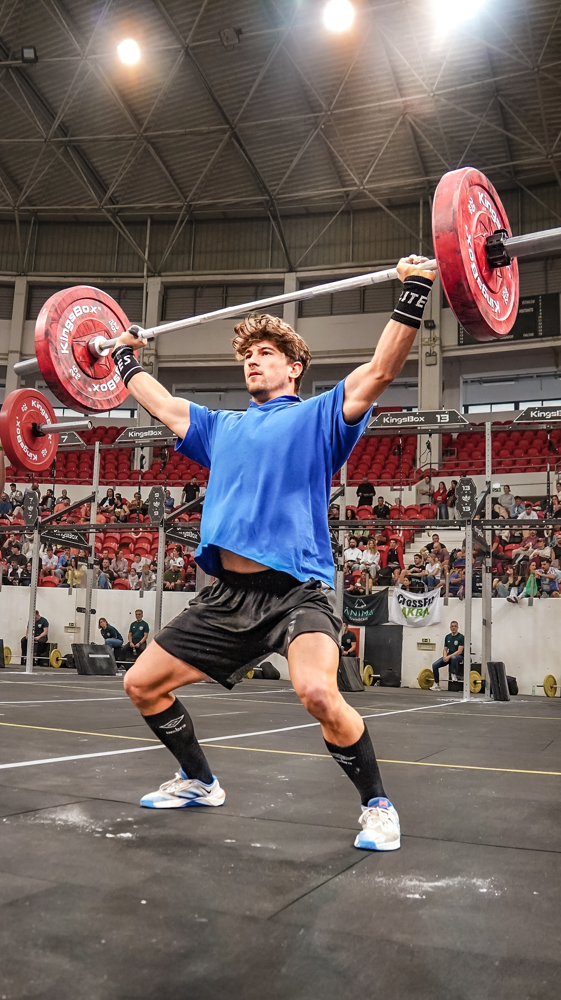
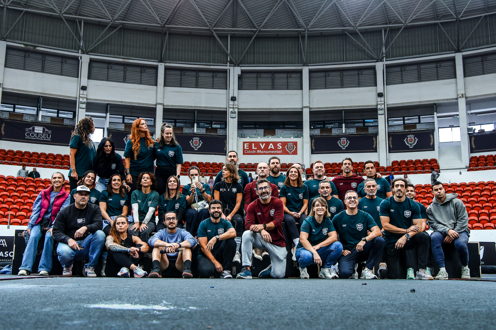

The Badajoz–Elvas Throwdown brought 600 athletes to the Coliseu Comendador Rondão Almeida in Elvas on 7 and 8 November 2026, turning the arena into a two-day test of strength, agility and endurance.
Competitors from Spain, Portugal and other countries took part across individual, pairs and team formats. Around 2,000 spectators followed the competition from the stands, according to reporting from Elvas.
A cross-border competition in Elvas
The event carries Badajoz and Elvas in its identity, linking neighbouring communities on either side of the Spanish–Portuguese border. The 2026 edition returned to the Coliseu with a new format and a competition floor built around multiple simultaneous challenges.


Image Media across the arena
The photographs move from a close view of a barbell lift to the scale of the venue and the people working behind the event. Together they record both the intensity of competition and the organisation required to fill the arena.
Image Media's coverage team was Michael Rosa, Tiago Chaves, Fran Paulino, Thainá Duete and Liane Ferreira. The supplied files do not identify the individual author of each selected photograph, so the images in this report are credited collectively to the coverage team.
Image Media coverage
Reporting: IM News Editorial Desk
Coverage photographers: Michael Rosa; Tiago Chaves; Fran Paulino; Thainá Duete; Liane Ferreira / Image Media
Dates, venue, attendance and competition format checked against event reporting and the competition listing.